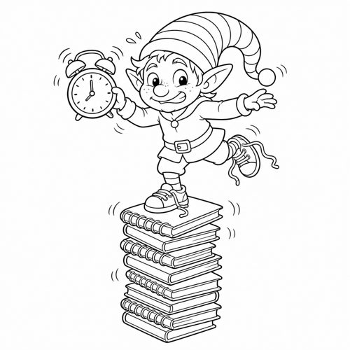

Compiti senza urla
Da stampare
- L'orologio dei turni da ritagliare
- Il cartellone di squadra
- Le carte delle pause
E in più le illustrazioni del capitolo, da colorare quante volte volete.
Scarica il PDFStampate su A4 al 100% ("dimensioni effettive"). Va bene anche in bianco e nero.
Il mini gioco (5 minuti, facoltativo)
L'orologio dei turni: Timer 15 + 3 minuti: la pausa si gioca dal vivo.
Apri il giocoLo schermo è solo un assaggio: finito il gioco, si mette via il telefono e si gioca dal vivo.